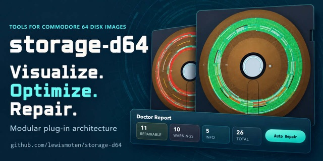

D64 Storage Lab
Repair and optimization

A browser workbench that maps Commodore 64 disk sectors and file chains, estimates read efficiency, repairs corruption, restores deleted files, and compares optimized and fragmented layouts.
Executive summary
Why it exists
Some disk images generated with AI help passed basic validation but failed to load in emulators. A pass or fail wasn't enough; I needed to see the disk's structure and connect suspicious bytes to the structures they affect.
Outcome
Optimize and Deoptimize make layout tradeoffs visible and testable. A live lab is on GitHub Pages.
My role
Author and maintainer.
Technical overview
How it works
A reusable JavaScript support layer and an interactive visual lab. You can create, load, inspect, and download 35-, 40-, and 42-track images, browse a visual disk map, and follow directory and file-sector chains. The lab finds the structural problems I met in real generated images, offers targeted repairs, and has an Auto Repair for low-risk fixes. You can drop files onto an image and download files directly.
Hard parts
Once integrity was covered, the question became how placement affects reading. The lab models a stock 1541 from its DOS ROM: rotation, head stepping, read-ahead, and the slow C64 serial bus. A speed map shows the delay each link adds to a stock LOAD and how closely the layout follows the DOS placement rule.